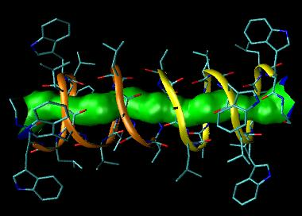

Documentation for the HOLE suite of programs
Documentation for the HOLE suite of programs
Oliver S. Smart and Guy Coates
Originally developed at School of Crystallography, Birkbeck College London.
HOLE
is now hosted by the Sansom Laboratory, University of Oxford.

Visualization of the cavity running through the channel structure of gramicidin A
determined by Arseniev and co-workers.
The HOLE representation of the internal surface of the
pore is shown in a multicoloured form produced by
sos_triangle program.
Red marks places where the pore radius is below
0.6 Å, green is used where it is in the range 0.6Å to 1.15Å and
blue
marks places where it is above 1.15Å. AMBER values where used for van der Waals
atomic radii (file simple.rad is used). A radius of 1.15Å is the minimum required for
a water molecule showing that this form of gramicidin would be filled with
a single file solvent molecules under normal conditions.
The vmd program was
used to visualize the surface within the molecule -
shown in a liquorice representation of bonds with
yellow and tan ribbons marking the main chain of
the dimer. The picture was rendered with the tachyon ray tracer
supplied with vmd. vmd homepage: http://www.ks.uiuc.edu/Research/vmd/
- Contacts
- For all queries, comments and help on the HOLE program.
Look at the HOLE homepage on the web:
http://hole.biop.ox.ac.uk/hole
- HOLE documentation is now available on the web at:
http://hole.biop.ox.ac.uk/hole/doc
- Contents
-
1.0 Distribution conditions
- 1.1 Formal Notice
-
1.2 Acknowledgements
-
2.0 Introduction & Setup
-
2.1 Acquiring, Unpacking and setting up the package
-
2.2 Brief scientific background to the hole method
-
2.3 Copy of J. Mol. Graphics article giving overview of HOLE
-
2.4 New features for release 2.0
-
3.0 Control of HOLE
-
3.1 Cards which must be specified:
COORD,
RADIUS
-
3.2 Cards which may be specified:
- The most useful cards:
CPOINT,
CVECT ,
SPHPDB,
ENDRAD,
CONN,
IGNORE
- Other cards:
SHORTO,
SAMPLE,
MCDISP,
MCKT,
MCSTEP,
RASEED,
CHARMD/CHARMS.
2DMAPS,
CAPSULE
-
3.3 Cards which are deprecated
-
4.0 Visualization of HOLE results
-
4.1 Plotting a 2D graph of pore radius
vs channel coordinate
-
4.2 sph_process - a program to produce surface
information from .sph file
-
4.3 qpt_conv - a program to convert .qpt graphics
files for use with a wide variety of molecular
graphics programs
-
4.4 sos_triangle - a program to produce solid rendered
surfaces for hole objects
-
5.0 van der Waals radii files
22 Dec 2004 - rewrite still incomplete but at least covers how to get rendered surface
into vmd OSS.
1.0 Distribution conditions for the HOLE suite of programs
HOLE and ancillary programs are supplied free to non-profit
making organizations. This is on the understanding that they will not be passed
on to any third party.
If any one wants to use the program direct them to the HOLE homepage.
Also details of any modification/improvement made must be sent to
me - so that everyone else can benefit
(all rights to modified versions of any of
the programs will remain with the author). It should be
noted that the code and notes are at an early stage of development and therefore
the responsibility for their use and correctness of results lies with the
user rather
than me or Birkbeck College.
If you wish to incorporate any of the routines supplied
in software of your own please contact Oliver Smart for permission.
If anyone else has access to the code/executables mounted in your
space then it is your responsibility to ensure that they abide
by these conditions.
Use of the program by profit-making organizations is permitted on a trial
basis for free. However, if you find the program useful then please contact
Oliver Smart to arrange a contribution to support further development.
You must reference any use made of HOLE in published work by citing:
- O.S. Smart, J.M. Goodfellow and B.A. Wallace (1993)
- The Pore Dimensions of Gramicidin A
- Biophysical Journal 65:2455-2460.
- .
- And any relevant subsequent publications.
1.1 Formal notices
Version 1, 2.0 and 2.1: This documentation and software is an unpublished work containing confidential
and proprietary information of Birkbeck College. Use, disclosure, reproduction
and transfer of this work without the express written consent of Birkbeck
College are prohibited. This notice must be attached to all copies or
extracts of the software.
Version 2.2: This documentation and software is an unpublished work containing confidential
and proprietary information of Oliver Smart. Use, disclosure, reproduction
and transfer of this work without the express written consent of
Oliver Smart are prohibited. This notice must be attached to all copies or
extracts of the software.
1.2 Acknowledgements
- Original Release
- The support of the UK Science and Engineering Research Council under project
grant GR/G49494 and from the Molecular Recognition and Computational
Science Initiatives is gratefully acknowledged. I should like to thank Julia
Goodfellow and Bonnie Wallace for support and many discussions. Thanks are
also due to Mark Sansom and his group at the University of Oxford, and Karen
Duca of Brandeis University for testing the first release. In addition thanks to
Rod Hubbard and Polygen/Molecular Simulations Inc. for providing the 3D plot
file facility in HYDRA and QUANTA. QUANTA is available from Molecular
Simulations Inc., Waltham, MA 02154, USA. InsightII is available from Biosym
Technologies, 9685 Scranton Road, San Diego, CA 92121 - 2777 USA.
- release v2.
- The generous support of the Wellcome Trust by the provision of a Career Development Fellowship
for the author is gratefully acknowledged. Much of the work undertaken was encouraged
by Dr Mark Sansom and members of his group at the University of Oxford.
Thanks to Valeriu Niculae and Joe Neduvelil for contributing to the programming as students at Birkbeck.
Navigation:
- Back to the Top
- Back to contents
- On to next section 2.0 Introduction & Setup
Copyright 1997, 2004 by Oliver S. Smart
 > ">
> ">